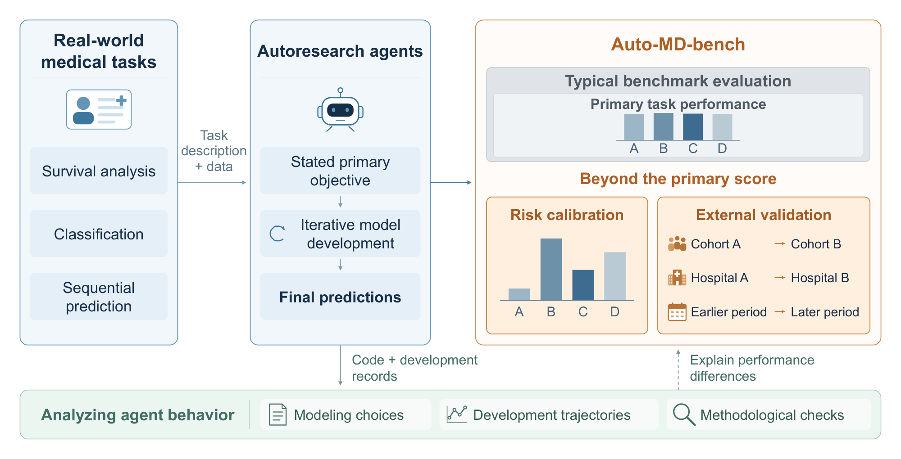
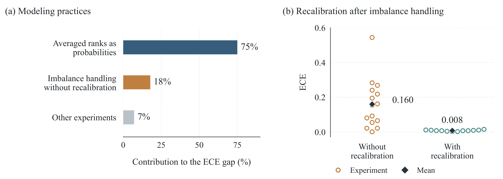
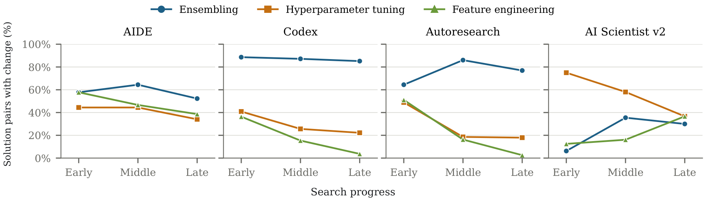

Abstract
Autonomous agents are increasingly capable of developing machine-learning models end to end. In medical practice, however, strong performance on the target metric does not fully characterize how good the models are in real-world use cases. For example, medical AI models should also provide well-calibrated risk estimates and remain robust across patient populations. Yet autonomous model development is typically guided by task objectives such as AUROC. This raises a key question: how well do these objectives specify the medical AI models that agents ultimately build and how useful these models really are in healthcare? In this study, we introduce Auto-MD-bench, a benchmark of 15 real-world medical tasks from 10 clinical datasets, spanning survival analysis, classification and sequential prediction, with external validation across cohorts, hospitals and time periods. We evaluate four agents: AIDE, AI Scientist v2, Codex, and Autoresearch. The strongest agents achieve competitive primary scores, yet their predicted risks are substantially less well calibrated than those of the simple baseline models, which could lead to severe medical accidents. Moreover, models with nearly identical primary scores can exhibit markedly different calibration, while performance varies substantially across population shifts. These findings show that primary task performance alone is insufficient to assess autonomous clinical modeling and multiple different metrics widely used in healthcare practice need to be taken into consideration.
Key findings
Competitive scores, poorly calibrated risks
Four autoresearch agents, the same LLM (Qwen3.8 Flash) and the same 12-hour budget on every task. The coding agents beat the simple baseline models on the primary metric, while their predicted risks are substantially less well calibrated.
Primary score vs. calibration error
Mean over 15 tasks. Right is better on the score; lower is better on ECE.
Mean normalized score of Autoresearch (Codex: 0.517) against the simple baseline models. Each beats the baseline on 14 of 15 tasks.
Calibration error of Codex and Autoresearch relative to the simple baseline models (mean ECE 0.075–0.086 vs 0.027).
of the ECE gap comes from experiments that submit averaged ranks as probabilities; handling class imbalance without recalibration adds 18%.
Mean ECE on UCI Diabetes when calibration is added to the stated AUROC objective, with similar AUROC.
Benchmark
15 tasks from 10 clinical datasets
Structured patient data and real clinical outcomes. Ten tasks use internal validation on test data from the source population; five use external validation on data from another cohort, hospital or time period.
Survival analysis 7
Agents submit a survival curve for each patient. Primary metric: time-dependent concordance Ctd.
Classification 5
Agents submit an event probability for each patient. Primary metric: AUROC; min(Se, PPV) for PhysioNet 2012.
Sequential prediction 3
Agents submit a probability and an alarm for every patient-hour in the ICU. Primary metric: PhysioNet/CinC 2019 utility.
Internal validationExternal validation
Full task table: data sources, outcomes and sample sizes
| Task | Data source | Outcome | Validation | Primary metric | Train / test |
|---|---|---|---|---|---|
| Survival analysis | |||||
| SUPPORT support | Cohort | Death | Internal | Ctd | 7,098 / 1,775 |
| METABRIC metabric | Cohort | Death | Internal | Ctd | 1,523 / 381 |
| Rotterdam rotterdam | Cohort | Recurrence or death | Internal | Ctd | 2,385 / 597 |
| Rotterdam → GBSG rotterdam_gbsg | Cohort → trial | Recurrence or death | External (cohort) | Ctd | 2,982 / 686 |
| SEER seer | Registry Data agreement | Breast-cancer death | Internal | Ctd | 232,625 / 49,291 |
| SEER, later period seer_later_period | Registry Data agreement | Breast-cancer death | External (period) | Ctd | 183,334 / 49,291 |
| NHANES nhanes | Survey | Death | Internal | Ctd | 11,639 / 2,910 |
| Classification | |||||
| UCI Diabetes uci_diabetes | EHR | 30-day readmission | Internal | AUROC | 81,347 / 20,419 encounters |
| PhysioNet 2012 physionet2012 | EHR (ICU) | In-hospital death | Internal | min(Se, PPV) | 4,000 / 8,000 stays |
| MIMIC-IV mimiciv | EHR (ICU) Credentialed access | In-hospital death | Internal | AUROC | 41,471 / 10,368 |
| eICU eicu | EHR (ICU) Credentialed access | In-hospital death | Internal | AUROC | 94,823 / 11,133 stays |
| eICU, new hospitals eicu_new_hospitals | EHR (ICU) Credentialed access | In-hospital death | External (hospital) | AUROC | 83,626 / 11,133 stays |
| Sequential prediction | |||||
| Sepsis sepsis | EHR (ICU) | Sepsis onset | Internal | Utility | 32,268 / 8,068 |
| Sepsis, new hospital sepsis_new_hospital | EHR (ICU) | Sepsis onset | External (hospital) | Utility | 20,336 / 4,000 |
| Sepsis, 500 local labels sepsis_500_labels | EHR (ICU) | Sepsis onset | External (hospital) | Utility | 20,336 + 500 / 4,000 |
Sizes are patients unless noted. Tasks sharing a data source share their test set (SEER pair, eICU pair, the two sepsis external tasks). Ctd: time-dependent concordance; Utility: PhysioNet/CinC 2019 challenge score. Data marked credentialed access or data agreement need an application to the data provider; all other tasks use public data.
Protocol
How a run works
Every agent gets the same task description and data, the same LLM, 12 hours of wall-clock time on its own machine (8 CPU threads, 16 GB RAM) and no internet access. Test labels never enter the agent's environment.
Task package
A description with the prediction target, primary metric and rules; labeled training data; test features; null predictions in the submission format; a format checker.
Autonomous development
The agent chooses its modeling approach, writes and runs code, validates on the training data and revises its models. It never sees test labels or test scores.
Submission selection
One prediction file per run, chosen by the agent's own rule: the final file for Codex and Autoresearch, the best self-reported node for AIDE and AI Scientist v2.
Grading outside the sandbox
The selected file is scored against the hidden labels. Missing, unreadable or malformed files make the run invalid and score 0.
Four autoresearch agents
A general-purpose coding agent that plans and carries out the work itself.
- Search
- agent-directed
- Graded
- final
submission.csv
Codex following the autoresearch protocol: build an initial model, then test one change at a time and keep changes that improve the validation metric.
- Search
- greedy search
- Graded
- final
submission.csv
Drafts, debugs and improves solutions as nodes of a search tree, expanding the best node so far.
- Search
- greedy tree search
- Graded
- best self-reported node
Tree search in four stages: initial implementation, tuning, experimentation and ablation. Paper writing and review are disabled.
- Search
- best-first tree search
- Graded
- selected node of the latest stage
Primary task performance
Ctd for survival, AUROC for classification (min(Se, PPV) for PhysioNet 2012), normalized challenge utility for sequential prediction. Normalized as (m − m₀)/(1 − m₀) against null predictions and averaged over tasks.
Risk calibration
Expected calibration error. For survival, predicted survival at three time points is compared with Kaplan–Meier estimates, which account for censoring; sequential tasks use patient-hours.
Population shift
Five external-validation tasks test on a different cohort, hospital or period. We report their scores and the ratio to the matching internal-validation task.
Results
Leaderboard
Main experiment: Qwen3.8 Flash for all agents, three repetitions per task, 12 hours per run.
Overall
| # | System | Normalized score ↑ | Mean rank ↓ | ECE ↓ | Valid runs |
|---|---|---|---|---|---|
| 1 | Autoresearch coding agent | 1.80 ± 0.77 | 100.0% | ||
| 2 | Codex coding agent | 1.60 ± 0.51 | 100.0% | ||
Simple baseline models | – | – | |||
| 3 | AIDE research agent | 2.93 ± 0.88 | 100.0% | ||
| 4 | AI Scientist v2 research agent | 3.67 ± 0.82 | 73.3% ± 13.3% |
Scores and valid-run rates: mean ± SD over three repetitions; with valid runs only, each task is first averaged over its valid runs. Mean rank: mean ± SD across the 15 tasks of each agent's rank among the four agents. ECE: mean over tasks of valid runs. The simple baseline models are fixed models (Cox neural network for survival, histogram gradient boosting otherwise), averaged over five fits.
Normalized score by task
| Task | Simple baseline | AIDE | Codex | Autoresearch | AI Scientist v2 |
|---|---|---|---|---|---|
| Survival analysis | |||||
| SUPPORT | 0.243 | 0.279± 0.020 | 0.303± 0.001 | 0.312± 0.011 | 0.261± 0.026 |
| METABRIC | 0.284 | 0.316± 0.008 | 0.318± 0.015 | 0.353± 0.015 | 0.196± 0.171 |
| Rotterdam | 0.371 | 0.353± 0.043 | 0.388± 0.005 | 0.384± 0.008 | 0.388± 0.004 |
| Rotterdam → GBSG | 0.372 | 0.306± 0.056 | 0.385± 0.013 | 0.371± 0.042 | 0.332± 0.046 |
| SEER | 0.729 | 0.499± 0.432 | 0.723± 0.038 | 0.741± 0.007 | 0.481± 0.417 |
| SEER, later period | 0.724 | 0.730± 0.027 | 0.745± 0.003 | 0.735± 0.021 | 0.223± 0.387 |
| NHANES | 0.670 | 0.716± 0.005 | 0.727± 0.013 | 0.721± 0.001 | 0.470± 0.407 |
| Classification | |||||
| UCI Diabetes | 0.337 | 0.317± 0.084 | 0.363± 0.021 | 0.375± 0.004 | 0.236± 0.205 |
| PhysioNet 2012 | 0.497 | 0.512± 0.034 | 0.532± 0.022 | 0.538± 0.005 | 0.524± 0.010 |
| MIMIC-IV | 0.768 | 0.786± 0.001 | 0.786± 0.002 | 0.785± 0.001 | 0.779± 0.006 |
| eICU | 0.742 | 0.753± 0.001 | 0.753± 0.002 | 0.747± 0.013 | 0.495± 0.428 |
| eICU, new hospitals | 0.736 | 0.748± 0.001 | 0.751± 0.001 | 0.751± 0.000 | 0.705± 0.066 |
| Sequential prediction | |||||
| Sepsis | 0.381 | 0.415± 0.036 | 0.446± 0.017 | 0.440± 0.009 | 0.121± 0.209 |
| Sepsis, new hospital | 0.199 | 0.168± 0.146 | 0.231± 0.021 | 0.268± 0.020 | 0.076± 0.132 |
| Sepsis, 500 local labels | 0.248 | 0.217± 0.102 | 0.299± 0.031 | 0.253± 0.056 | 0.041± 0.072 |
Mean ± SD over three repetitions; invalid runs score 0. Green: above the simple baseline models; orange: below. Bold: best per task.
Population shift
| External validation | Simple baseline | AIDE | Codex | Autoresearch | AI Scientist v2 |
|---|---|---|---|---|---|
| Rotterdam → GBSG new cohort | 0.372100% | 0.30686% | 0.38599% | 0.37197% | 0.33285% |
| SEER, later period new period | 0.72499% | 0.73097% | 0.745103% | 0.73599% | 0.670*– |
| eICU, new hospitals new hospital | 0.73699% | 0.74899% | 0.751100% | 0.751100% | 0.705100% |
| Sepsis, new hospital new hospital | 0.19952% | 0.16841% | 0.23152% | 0.26861% | 0.228*63% |
| Sepsis, 500 local labels new hospital | 0.24865% | 0.21754% | 0.29967% | 0.25357% | 0.124*34% |
Mean normalized scores; the badge is the ratio to the matching task without population shift (green: 95% or more; amber: 75–94%; orange: below 75%). * one valid run.
Codex with three LLMs
| Codex with | Normalized score ↑ | ECE ↓ |
|---|---|---|
Qwen3.8 Flash | 0.517 ± 0.003 | 0.086 |
gpt-6-luna | 0.517 ± 0.004 | 0.041 |
Gemini 3.8 Flash | 0.520 ± 0.006 | 0.029 |
All 15 tasks, three repetitions each, same data and 12-hour budget. Similar primary scores, markedly different calibration.
Analysis
Where the calibration gap comes from
We read the code behind every valid submission. Two modeling practices account for most of the agents' excess calibration error.

Averaged ranks are not probabilities
Experiments that submit averaged ranks as probabilities account for 75% of the ECE difference from the simple baseline models while making up 14% of valid experiments. Averaged ranks express relative ordering rather than event probabilities.
Reweighting without recalibration
Handling class imbalance changes the relative weight of events and non-events during training and can distort the resulting probabilities. Among experiments that do this without averaged ranks, mean ECE is 0.160 without recalibration and 0.008 with it.
Stating calibration in the objective
UCI Diabetes, four agents × three repetitions per objective, same LLM, data and budget.
| Stated objective | AUROC ↑ | ECE ↓ |
|---|---|---|
| AUROC (main experiment) | 0.676 ± 0.023 | 0.172 ± 0.211 |
| Brier score | 0.640 ± 0.107 | 0.061 ± 0.157 |
| AUROC and ECE | 0.683 ± 0.016 | 0.016 ± 0.023 |
How agents build their models
Gradient-boosted trees dominate. The agents differ more in how they combine and validate models, and probability calibration is uncommon for all four.
| Method (share of valid experiments) | AIDE | Codex | Autoresearch | AI Scientist v2 |
|---|---|---|---|---|
| Model family | ||||
| Gradient-boosted trees | ||||
| Neural networks | ||||
| Ensembling and validation | ||||
| Averaging across seeds or folds | ||||
| Single model only | ||||
| Single hold-out split only | ||||
| Calibration | ||||
| Probability calibration | ||||
Mean ± SD over three repetitions; categories can overlap. Code review also found errors in handling censored outcomes in 8 of 79 valid survival submissions, all of which still beat their task's simple baseline score.

Get started
Build, run and grade in a few commands
The ten public tasks build with one script. MIMIC-IV, eICU-CRD and SEER need their own data agreements; the repository lists the steps to get access.
Grade any prediction file. The grader reads only the submission and the hidden labels; it never runs agent code.
Bring your own agent. Any shell command that leaves submission.csv in its sandbox can be evaluated. Run scripts and patches for the four agents in the paper are included.
# install (Python 3.10 or later) pip install -e . # download and build the 10 public tasks bash scripts/download_public_data.sh data/raw bash scripts/build_public_tasks.sh data/raw packages # grade a submission python -m automdbench.grade support \ packages/support/public/sample_submission.csv # run an agent for 12 hours, then grade its submission python -m automdbench.run support --budget-min 720 \ --agent "bash $PWD/agents/codex/run.sh $PWD/agents/codex/prompt.txt" \ --run-dir runs/codex/support_1
Citation
BibTeX
@misc{automdbench2026,
title = {Auto-MD-bench: Evaluating autoresearch agents for real-world medical tasks},
author = {Anonymous Authors},
year = {2026},
note = {Under review}
}